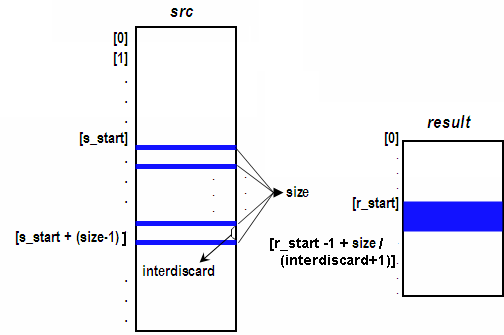

DSP_EXTRACT
This API extracts the specified part of an array and copies it to another array.
This API is defined in the header file /opt/hp93000/soc/prod_com/include/MAPI/libdsp.h.
Syntax
DSP_EXTRACT(ARRAY_I& src, ARRAY_I& result, INT s_start, INT r_start, INT size); DSP_EXTRACT(ARRAY_I& src, ARRAY_I& result, INT s_start, INT r_start, INT size, INT interdiscard); DSP_EXTRACT(INT *src, INT *result, INT s_start, INT r_start, INT size); DSP_EXTRACT(INT *src, INT *result, INT s_start, INT r_start, INT size, INT interdiscard); DSP_EXTRACT(ARRAY_D& src, ARRAY_D& result, INT s_start, INT r_start, INT size); DSP_EXTRACT(ARRAY_D& src, ARRAY_D& result, INT s_start, INT r_start, INT size, INT interdiscard); DSP_EXTRACT(DOUBLE *src, DOUBLE *result, INT s_start, INT r_start, INT size); DSP_EXTRACT(DOUBLE *src, DOUBLE *result, INT s_start, INT r_start, INT size, INT interdiscard); DSP_EXTRACT(ARRAY_COMPLEX& src, ARRAY_COMPLEX& result, INT s_start, INT r_start, INT size); DSP_EXTRACT(ARRAY_COMPLEX& src, ARRAY_COMPLEX& result, INT s_start, INT r_start, INT size, INT interdiscard); DSP_EXTRACT(COMPLEX *src, COMPLEX *result, INT s_start, INT r_start, INT size); DSP_EXTRACT(COMPLEX *src, COMPLEX *result, INT s_start, INT r_start, INT size, INT interdiscard);
I/O |
Parameter |
Description / Range |
|---|---|---|
I |
src |
Source array |
O |
result |
Extracted results |
I |
s_start |
Start point of source array s_start + size - 1 ≤ size of source array |
I |
r_start |
Start point of result array r_start + size - 1 ≤ size of result array |
I |
size |
Number of elements to be processed 1 ≤size≤ 2097152
|
I |
interdiscard |
Number of elements discarded after each element. interdiscard ≤size |
Important point
The DSP_EXTRACT API extracts a block of
data from src and copies the block into result as shown in the
following figure. src is not changed.

Example
DOUBLE array1[600], array2[256]; INT s_start = 64; INT r_start = 32; INT size = 16; INT interdiscard = 3; . . DSP_EXTRACT(array1, array2, s_start, r_start, size, interdiscard);
DSP_EXTRACT
extracts one point every four points from array1 starting with
array1[64]. The extracted 4 points are array1[64],
array1[68], array1[72] and array1[76]. Then
these points are copied to array2, where they are stored as
array2[32] through array2[35].
Functional changes
- Introduced before SmarTest 6.3.2
- SmarTest 6.5.2: New added parameter: interdiscard
- SmarTest 6.5.2: The parameters src and result can be of the type ARRAY_COMPLEX or COMPLEX.